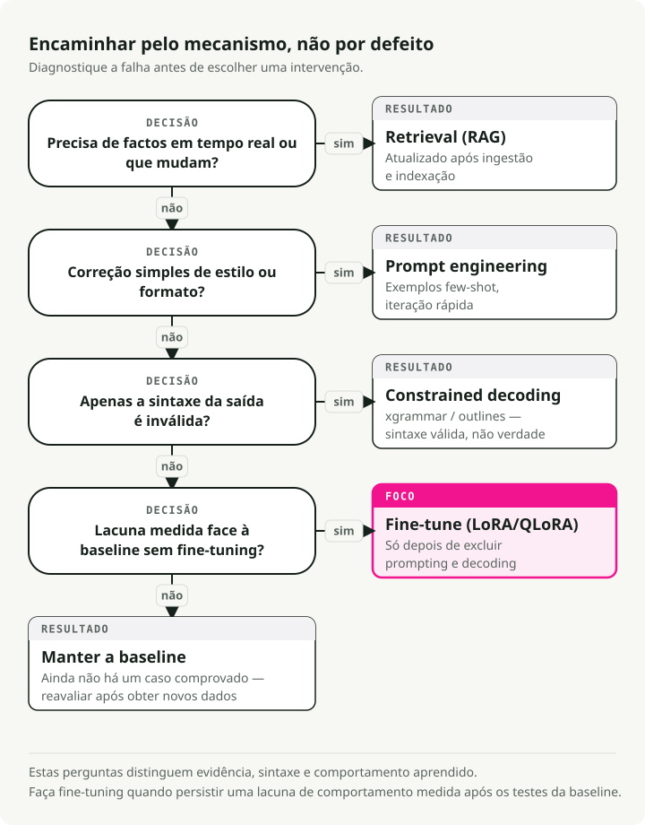
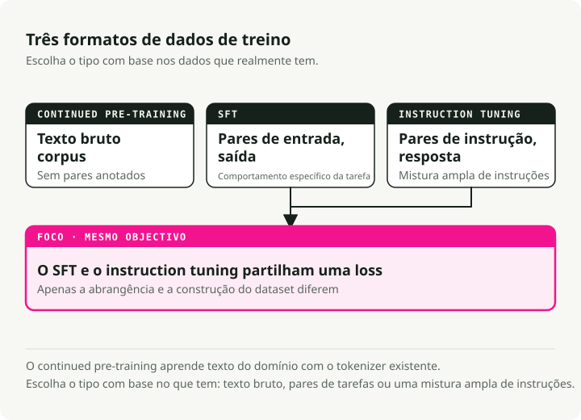
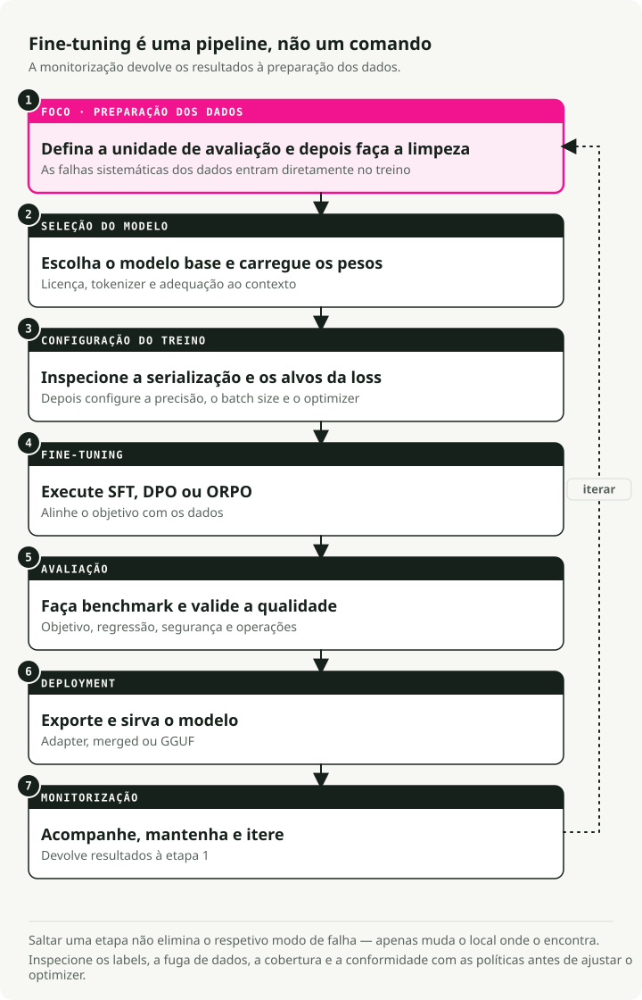
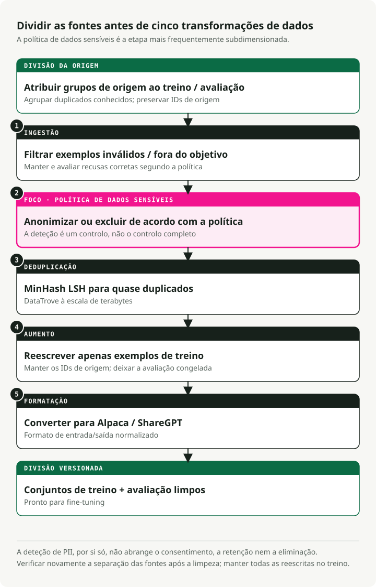
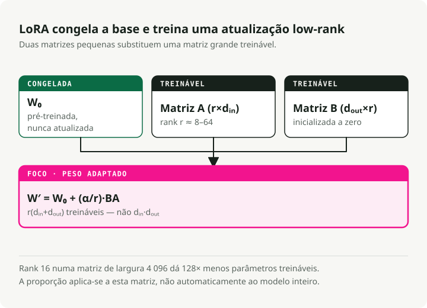
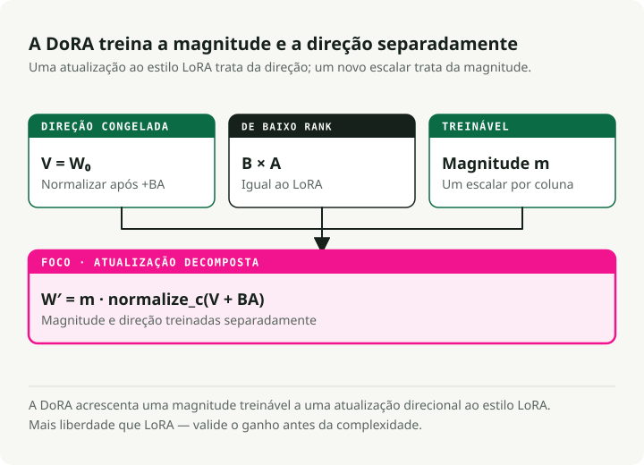
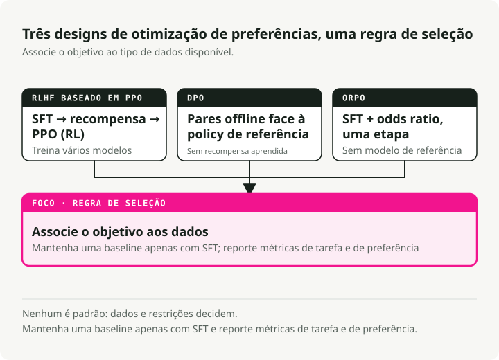
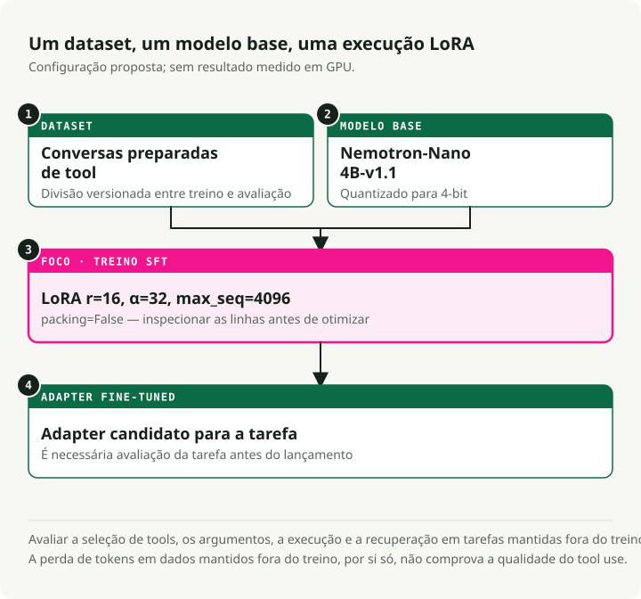
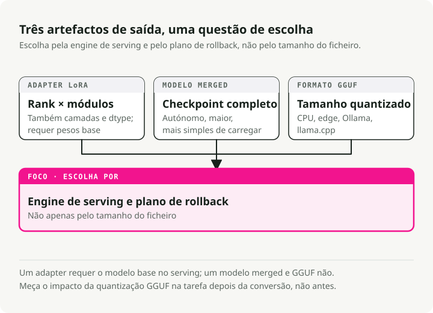

Tradução automática
Este artigo foi traduzido automaticamente a partir da versão original em inglês.
Guia de Fine-Tuning de LLMs: LoRA, QLoRA, DoRA, Unsloth, Axolotl e Deployment
A maior parte dos projetos de fine-tuning que vi falha não no treino, mas nas etapas antes e depois dele: dados maus, o modelo base errado, nenhuma eval real. O treino em si é a parte fácil. Este guia é aquilo que gostava de ter tido antes do meu primeiro fine-tune sério — quando o fazer, quando não o fazer, os métodos que funcionam hoje (LoRA, QLoRA, DoRA, ORPO) e como levar um modelo de um notebook até um endpoint de serving.
Deve sequer fazer fine-tuning?
Antes de gastar horas de GPU, decida se o fine-tuning é a ferramenta certa para o problema que tem à frente.

Fine-tuning vs RAG
Não faça fine-tuning só para adicionar "conhecimento". Use antes esta divisão:
| Funcionalidade | Fine-Tuning | RAG (Retrieval-Augmented Generation) |
|---|---|---|
| Função principal | Altera pesos internos para ensinar competências, estilos ou comportamentos | Fornece contexto externo e atualizado no momento da inferência |
| Melhor para | • Estilos conversacionais específicos • Seguimento complexo de instruções • Raciocínio específico de domínio |
• Dados que mudam rapidamente (notícias, preços de ações) • Reduzir alucinações (grounding) • Citar fontes |
| Gestão de conhecimento | Internaliza padrões, não factos | Recupera factos de uma base de conhecimento externa |
| Frequência de atualização | Requer re-treino para atualizações | Atualiza imediatamente com novos documentos |
Fine-tuning vs prompt engineering
Os LLMs modernos respondem de forma notável a prompts bem construídos. Esgote o prompting antes de recorrer ao fine-tuning.
| Aspeto | Fine-Tuning | Prompt Engineering |
|---|---|---|
| Custo inicial | Alto (curadoria de dados, compute de GPU, iteração) | Baixo (refinamento iterativo de prompts) |
| Flexibilidade | Fica fixo após o treino | Pode mudar a qualquer momento sem re-treino |
| Formato/estilo | Melhor para formatos de saída complexos e consistentes | Bom para formatação simples com exemplos few-shot |
| Latência | Mais baixa (sem prompts de sistema longos) | Mais alta (custo de contexto em cada pedido) |
| Melhor para | Comportamentos complexos, distillation, custo à escala | Iteração rápida, requisitos em mudança |
[!TIP] Experimente primeiro prompting Comece com exemplos few-shot no prompt. Se o comportamento continuar inconsistente, experimente SGR antes de recorrer ao fine-tuning.
Fine-tuning vs Schema-Guided Reasoning (SGR)
Bibliotecas como xgrammar e outlines restringem as saídas do modelo no momento da inferência usando finite state machines. Funcionam com modelos base out of the box, sem necessidade de treino.
O valor de SGR não está apenas nas saídas estruturadas. Está na consistência: a mesma forma de input dá-lhe a mesma forma de output em todas as execuções, sem re-treinar nada. Quando prompting por si só produz resultados inconsistentes, SGR fixa o padrão de saída no momento do decode.
| Aspeto | SGR (Sem Fine-Tuning) | Fine-Tuning |
|---|---|---|
| Setup | Imediato — definir schema, fazer deploy | Requer curadoria de dados, compute de GPU, iteração |
| Consistência | Estrutura garantida, padrões fiáveis | Comportamento aprendido (ainda pode variar) |
| Flexibilidade | Alterar schema a qualquer momento sem re-treino | Fica fixo após o treino |
| Latência | Ligeiro overhead (o modelo pode "lutar" contra o schema) | Mais baixa (o modelo produz o formato naturalmente) |
| Melhor para | Saídas estruturadas, comportamento consistente | Raciocínio complexo, mudanças profundas de comportamento |
Uma ordem prática:
- Comece com prompting e exemplos few-shot para formatação básica.
- Adicione SGR (
xgrammarououtlines) quando o formato for inconsistente. - Faça fine-tuning apenas quando precisar de mudanças comportamentais que um schema não consegue impor.
Referência rápida: associar problemas a soluções
| Desafio | Melhor solução | Porquê? |
|---|---|---|
| Conhecimento em falta | RAG | Os modelos alucinam factos. Retrieval fornece contexto fundamentado e atualizado |
| Formato/tom errados | Prompt Engineering | Os modelos modernos seguem bem instruções de estilo via exemplos few-shot |
| Saídas inconsistentes | SGR (xgrammar) | Estrutura garantida e fiabilidade sem treino |
| Mudanças comportamentais complexas | Fine-Tuning (SFT) | Persona profunda, padrões de raciocínio ou workflows multi-step |
| Segurança/preferência | Alignment (DPO) | Quando as saídas estão corretas mas não correspondem às preferências |
| Latência/custo à escala | Distillation (SFT) | Treinar um modelo student mais pequeno com as saídas de um teacher maior |
| Reduzir o tamanho do modelo | Quantization | Sem treino — comprime pesos (FP16→INT4) para inferência mais rápida |
Quando a matemática compensa de facto
O fine-tuning compensa quando o tráfego é alto e os requisitos são estáveis. Um setup RAG sólido transporta frequentemente 2.000 tokens de contexto em cada chamada: system prompt, documentos recuperados, exemplos few-shot. Esse é um custo de contexto que paga em todos os pedidos.
Um modelo fine-tuned absorve a maior parte dessas instruções nos seus pesos, por isso o prompt desce de ~2.000 tokens para ~50. Com volume suficiente, isso recupera o compute do treino em poucas semanas.
[!TIP] O setup híbrido O padrão que continuo a ver em produção: um modelo 8B fine-tuned emparelhado com um pequeno retriever RAG para factos. Muitas vezes bate um modelo 70B+ com prompting tanto em precisão como em custo.
Tipos de fine-tuning
Há três formas principais que o fine-tuning pode assumir. Diferem no tipo de dados de que precisam e no que ensinam ao modelo.

1. Continued pre-training (não supervisionado)
Treina o modelo base com mais texto bruto, sem labels. Continua a fazer previsão do próximo token, tal como durante o pre-training original.
Quando usar:
- O domínio tem vocabulário que o modelo base nunca viu (médico, jurídico, codebases internas).
- Tem grandes quantidades de texto de domínio mas nenhum par etiquetado de (input, output).
- O modelo base falha na terminologia específica do domínio.
Exemplo: treinar em milhões de notas clínicas para o modelo aprender abreviaturas médicas, nomes de medicamentos e workflows clínicos.
2. Supervised fine-tuning (SFT)
SFT treina com pares etiquetados de (input, output). Mostra ao modelo o output exato que pretende para cada input.
Quando usar:
- Tem uma tarefa específica com um formato input/output limpo.
- Tem dados etiquetados de qualidade, mesmo em pequenas quantidades.
- Precisa de comportamento previsível para uma forma conhecida de input.
Exemplo: treinar com pares de (descrição de query SQL, código SQL) para text-to-SQL.
{
"input": "Get all users who signed up last month",
"output": "SELECT * FROM users WHERE signup_date >= DATE_SUB(NOW(), INTERVAL 1 MONTH)"
}
3. Instruction tuning
Instruction tuning é um caso especial de SFT concebido para fazer os modelos seguir uma grande variedade de instruções em linguagem natural. Os dados de treino são pares de (instrução, resposta) em muitas tarefas diferentes.
Quando usar:
- Quer um assistente de propósito geral (como ChatGPT ou Claude).
- O modelo precisa de lidar com pedidos variados e abertos.
- Está a construir uma interface de chat.
Exemplo: treinar com milhares de instruções diversas como "Resume este artigo", "Escreve um poema sobre X", "Explica Y em termos simples".
Comparação
| Aspeto | Continued Pre-training | SFT | Instruction Tuning |
|---|---|---|---|
| Dados | Texto bruto | Pares de (input, output) | Pares de (instrução, resposta) |
| Labels | Nenhuma (não supervisionado) | Específicas da tarefa | Tarefas diversas |
| Objetivo | Conhecimento de domínio | Comportamento específico de tarefa | Seguir qualquer instrução |
| Volume de dados | Grande (milhões de tokens) | Pequeno-Médio (500-10k exemplos) | Médio-Grande (10k-100k exemplos) |
[!NOTE] O que as pessoas fazem na prática A maioria dos practitioners usa SFT para tarefas específicas e instruction tuning para assistentes de chat. Continued pre-training é mais raro porque precisa de enormes quantidades de texto de domínio e muito compute.
O pipeline de fine-tuning em 7 etapas
Fine-tuning é um pipeline, não um único comando. Cada etapa tem os seus próprios modos de falha, e saltar uma normalmente aparece mais tarde sob a forma de um mau modelo.

Cada etapa assenta na anterior:
- Preparação de dados — Limpar, deduplicar e formatar os seus dados (etapa com maior impacto)
- Seleção do modelo — Escolher o modelo base certo e carregar os pesos
- Setup de treino — Configurar hardware, hiperparâmetros e estratégia de otimização
- Fine-tuning — Executar treino SFT, DPO ou ORPO
- Avaliação — Medir performance e validar qualidade
- Deployment — Exportar e servir o seu modelo
- Monitorização — Acompanhar performance, manter e iterar
[!WARNING] Os dados são a base A etapa 1 (preparação de dados) é a de maior alavancagem. Os algoritmos não conseguem corrigir falhas sobre as quais treinou. 500-1.000 exemplos cuidadosamente curados vão normalmente bater 50.000 exemplos ruidosos.
Etapa 1: Preparação de dados
A maior parte dos projetos de fine-tuning falha aqui, não no treino. A preparação moderna de dados é mais do que correr uma regex sobre CSVs.

O pipeline de dados em 5 etapas
As equipas que fazem isto a sério apoiam-se em ferramentas como DataTrove (Hugging Face) e Distilabel (Argilla) em vez de scripts ad hoc.
1. Ingestão e filtragem
- Ação: remover recusas ("I cannot answer that"), UTF-8 corrompido e línguas fora do alvo.
- Ferramentas: Trafilatura para extração, FastText para language ID.
2. Remoção de PII (obrigatório em contexto enterprise)
- Ação: detetar e ocultar emails, endereços IP e números de telefone antes do treino.
- Ferramentas: Microsoft Presidio ou scrubadub.
- Porquê: treinar com PII de clientes é um incidente de segurança à espera de acontecer.
3. Deduplicação (MinHash LSH)
- Ação: remover quase-duplicados para o modelo não os memorizar.
- Ferramentas: DataTrove lida bem com processamento à escala de terabytes.
4. Augmentation sintética
- Ação: usar um modelo teacher mais forte (GPT-4o, DeepSeek-V3) para reescrever dados brutos em pares limpos de instrução-resposta.
- Ferramentas: Distilabel.
- Porque importa: é normalmente aqui que surge o maior ganho de qualidade.
5. Formatação
- Ação: converter para um formato standard (Alpaca ou ShareGPT).
Exemplos de formatos de dados
Formato Alpaca (instruction-following):
{
"instruction": "Summarize the following text.",
"input": "The text to be summarized...",
"output": "This is the summary."
}
Formato ShareGPT/ChatML (conversacional):
{
"conversations": [
{ "from": "user", "value": "Hello, who are you?" },
{ "from": "assistant", "value": "I am a helpful AI assistant." }
]
}
O que realmente importa
- Qualidade acima de quantidade. 500-1.000 exemplos cuidadosamente curados batem 50.000 ruidosos.
- Limpeza. Remova texto irrelevante, normalize whitespace, mantenha a formatação consistente.
- Equilíbrio. Distribua a cobertura pelos tópicos para o modelo não overfit ao segmento que domina.
- A remoção de PII é inegociável em qualquer sistema de produção.
Etapa 2: Seleção do modelo e hardware
Escolher o modelo base e perceber o mínimo de GPU disponível determina o que consegue realmente treinar.
Hardware por tamanho de modelo
A memória é o limite rígido. Os números abaixo assumem treino, não inferência.
| Escalão | Configuração de hardware | Capacidade | Caso de uso |
|---|---|---|---|
| Standard enterprise | 8x NVIDIA H100 (80GB) | Full Fine-Tuning | Treinar modelos 70B com contexto longo (32k+) à velocidade máxima |
| Mínimo viável (Pro) | 4x NVIDIA A100 (80GB) | QLoRA / LoRA | Fine-tuning de Qwen 72B ou Llama 70B em 4-bit |
| R&D local | 4x RTX 6000 Ada (48GB) | QLoRA | Workstation on-prem para requisitos de privacidade de dados |
| Hobbyist/Indie | 1-2x RTX 3090/4090 (24GB) | QLoRA | Fine-tune de modelos 7B-32B com métodos parameter-efficient |
[!TIP] As GPUs de consumo vão mais longe do que parece Com QLoRA e Unsloth, uma única RTX 4090 (24GB) consegue fazer fine-tune de modelos até 32B parâmetros. A 3090 continua sólida para treino de 7B-13B. O escalão de 24GB de VRAM chega para a maior parte do trabalho sério fora do território de contexto longo.
[!NOTE] Porque H100 A principal razão não é a VRAM, é a precisão FP8. As H100 suportam treino FP8 nativo, o que aproximadamente duplica a memória efetiva e o throughput face às A100. Para contextos de 128k tokens, FP8 em H100 é muitas vezes a única forma de acomodar um batch size razoável.
A matemática da memória
Para fazer fine-tune de um modelo 72B, a GPU tem de suportar:
- Pesos do modelo em precisão 16-bit: ~144 GB.
- Gradientes e estado do otimizador: cerca de 2-3× o tamanho do modelo, dependendo do otimizador (AdamW está no extremo mais pesado).
- Ativações: cresce com o comprimento de contexto, por exemplo 32k tokens.
É por isso que QLoRA (base em 4-bit + adapters LoRA) é o default prático para a maioria das equipas.
Etapa 3: Métodos de treino (PEFT e LoRA)
Full fine-tuning vs PEFT
Full fine-tuning (FFT) atualiza todos os pesos. Um modelo 7B em precisão 16-bit precisa de cerca de 112GB de VRAM só para treinar. Isso está fora do alcance da maioria das equipas.
Parameter-efficient fine-tuning (PEFT) treina apenas um pequeno subconjunto de parâmetros e congela o resto. A matemática fica muito mais favorável.
LoRA: o default
LoRA (Low-Rank Adaptation) é a técnica PEFT que deve aprender primeiro. O seu insight é simples: as alterações de pesos de que realmente precisa durante o fine-tuning têm baixo "intrinsic rank", por isso não precisa de updates de rank completo.

Em vez de atualizar uma matriz de pesos completa W (d × d), LoRA aprende duas matrizes menores:
- A (d × r) — down-projection
- B (r × d) — up-projection
O update é ΔW = B × A.
Com rank r=16, isso reduz os parâmetros treináveis em cerca de 10.000×, baixando a VRAM de 120GB para 16GB.
Comparação dos métodos PEFT
| Método | Como funciona | Poupança de memória | Melhor para |
|---|---|---|---|
| LoRA | Matrizes low-rank injetadas em pesos congelados | ~10x | Fine-tuning geral |
| QLoRA | LoRA + quantization do modelo base em 4-bit | ~20x | GPUs de consumo (16-24GB) |
| DoRA | LoRA com decomposição magnitude/direction | ~10x | Quando LoRA atinge o teto de performance |
| HFT | Congela metade dos parâmetros por ronda de treino | ~2x | Equilíbrio entre FFT e PEFT |
Quando escolher cada um
- LoRA: comece aqui. Rápido, eficiente em memória, bem suportado.
- QLoRA: quando quer fazer fine-tune de um modelo 70B em GPUs de consumo.
- DoRA: quando o teto de qualidade do LoRA aparece, especialmente em tarefas de raciocínio mais difíceis.
- HFT: quando LoRA não chega mas full fine-tuning é demasiado caro.
DoRA: LoRA com decomposição de pesos
DoRA (Weight-Decomposed Low-Rank Adaptation) divide cada peso pré-treinado em magnitude e direção e treina-os em separado. Normalmente fecha grande parte da distância entre LoRA e full fine-tuning.

Como funciona:
Em vez de tratar os pesos como uma entidade única, DoRA decompõe os pesos pré-treinados em dois componentes:
- Magnitude — um escalar treinável por coluna que controla a "força".
- Direção — atualizada com matrizes LoRA, que controla o "quê".
O update é W' = m × (V + B × A), onde:
m= magnitude (treinável)V= direção (W / ||W||)B × A= update LoRA à direção
O que ganha com essa estrutura extra:
- Updates de parâmetros mais ricos sem abdicar da eficiência.
- Qualidade mais próxima de full fine-tuning.
- A mesma poupança de memória de ~10× do LoRA.
- Particularmente visível em tarefas de raciocínio mais difíceis.
Half fine-tuning (HFT)
HFT fica entre full fine-tuning e os métodos PEFT:
- Método: em cada ronda, metade dos parâmetros do modelo são congelados e a outra metade é atualizada.
- Estratégia: a metade congelada vai rodando de ronda para ronda.
- Porque funciona: a metade congelada preserva conhecimento anterior enquanto a metade ativa aprende novo comportamento.
- Quando usar: quando LoRA não chega mas não pode pagar full fine-tuning.
Merging de adapters para aprendizagem multi-tarefa
Em vez de fazer fine-tuning de um modelo monolítico para várias tarefas, treine um pequeno adapter separado por tarefa e mantenha o modelo base congelado. Depois pode fazer merge dos adapters no momento de serving.
Métodos comuns de merging:
- Concatenação — combina parâmetros dos adapters e aumenta o rank efetivo. Rápido e simples.
- Combinação linear — soma ponderada dos adapters. Dá-lhe controlo.
- SVD — decomposição matricial para merging. Mais flexível, mas mais lenta.
Exemplo: um adapter para sumarização, outro para tradução, unidos num único modelo multi-tarefa.
Etapa 4: Fine-tuning e alignment de preferências
Por vezes SFT acerta na resposta mas falha no estilo: demasiado verboso, fora de tom, ocasionalmente inseguro. O alignment de preferências é o que corrige isso.

RLHF com PPO (a abordagem mais antiga)
A receita original era um pipeline em três etapas:
- SFT — aprender a tarefa.
- Reward model — treinar com preferências humanas (chosen vs rejected).
- PPO (Proximal Policy Optimization) — reinforcement learning para otimizar a policy.
Os pontos problemáticos:
- Complicado de implementar e manter.
- Caro — treina vários modelos.
- Sensível a hiperparâmetros e propenso a treino instável.
DPO (o sucessor mais simples)
DPO (Direct Preference Optimization) elimina o reward model explícito e o ciclo de RL. Continua a otimizar o objetivo RLHF (maximização da reward com uma restrição de KL-divergence), mas fá-lo como um problema de supervised learning reparametrizado em vez de reinforcement learning:
{
"prompt": "Explain quantum computing",
"chosen": "Quantum computing uses qubits...", # Preferred response
"rejected": "Well, it's complicated..." # Non-preferred response
}
O que ganha:
- Código mais simples (sem reward model separado, sem ciclo de RL).
- Treino mais estável, porque é supervised learning puro.
- Menor custo de compute.
DPO ganhou a maior parte da batalha prática, mas PPO não está totalmente ultrapassado:
- DPO pode produzir soluções enviesadas em alguns setups.
- Um PPO bem afinado continua a produzir resultados state-of-the-art em tarefas mais difíceis, como geração de código.
- O sinal de reward explícito do PPO dá orientação mais fina para tarefas especializadas.
Se estiver a começar hoje de raiz, deve recorrer primeiro a DPO (ou ORPO abaixo) e só voltar a PPO se tiver uma razão real.
ORPO (single-stage)
ORPO (Odds-Ratio Preference Optimization) colapsa SFT e alignment de preferências numa única execução de treino. Para a maioria das equipas, isso é uma simplificação importante.
Como funciona: ORPO usa uma loss combinada que faz duas coisas ao mesmo tempo:
- Maximiza a likelihood da resposta escolhida (aprende a tarefa).
- Penaliza a resposta rejeitada com um termo de odds-ratio (aprende preferências).
Hiperparâmetros que vale a pena conhecer:
from trl import ORPOConfig
config = ORPOConfig(
learning_rate=8e-6, # Very low, as recommended by the ORPO paper
beta=0.1, # Controls strength of preference penalty
# ... other params
)
- Learning rate: mantenha-o muito baixo (8e-6 no paper de ORPO).
- Beta: controla quão forte é a penalização de preferência (0.1 é um valor típico).
O que ganha com ORPO:
- Uma etapa de treino em vez de duas.
- Sem reward model.
- Menos hiperparâmetros do que DPO.
- O caminho mais curto de modelo bruto até modelo alinhado.
Quando escolher o quê:
- ORPO: o default para a maioria dos casos de uso.
- DPO: quando quer mais controlo sobre o alignment.
- PPO: quando precisa de um sinal de reward explícito, como em geração de código.
Frameworks de fine-tuning
O ecossistema estabilizou à volta de quatro ferramentas principais.
Unsloth — velocidade e eficiência de memória
Unsloth envolve as bibliotecas trl e transformers da HuggingFace e acrescenta uma camada de otimizações por cima:
- Kernels GPU Triton customizados para attention, RoPE e cross-entropy que evitam overhead do PyTorch.
- Backprop eficiente em memória que recompõe ativações durante a backward pass em vez de as manter em memória.
- Operações fused que colapsam múltiplos passos (layer norm + linear, e semelhantes) em chamadas GPU únicas.
- Quantization em 4-bit integrada diretamente no caminho QLoRA com dequantization otimizada.
[!IMPORTANT] A ordem de importação importa O Unsloth faz patch aos pacotes HuggingFace no momento da importação. Importe e inicialize
FastLanguageModeldeunslothantes de importar qualquer coisa detrloutransformers, caso contrário os patches não terão efeito.
# ✅ Correct order
from unsloth import FastLanguageModel # Must be first!
from trl import SFTTrainer
from transformers import TrainingArguments
# ❌ Wrong order - will fail
from trl import SFTTrainer
from unsloth import FastLanguageModel # Too late!
Melhor para: treino com uma única GPU, prototipagem, notebooks Colab, qualquer pessoa atenta à fatura da GPU.
O principal ganho: esses kernels Triton customizados tornam-no 2-5× mais rápido do que o caminho standard da HuggingFace.
Axolotl — produção orientada por configuração
# config.yaml - no code required
base_model: meta-llama/Meta-Llama-3-8B
adapter: qlora
lora_r: 32
lora_alpha: 16
datasets:
- path: data/my_data.jsonl
type: alpaca
sample_packing: true
Executar com: accelerate launch -m axolotl.cli.train config.yaml
Melhor para: pipelines de produção, clusters multi-GPU, experiências reproduzíveis.
O principal ganho: as configs são ficheiros YAML, o que significa controlo de versão e partilha fácil.
Comparação de frameworks
| Funcionalidade | Unsloth | Axolotl | TRL | Torchtune |
|---|---|---|---|---|
| Ponto forte | Velocidade e eficiência | Escala multi-GPU | Ecossistema | Nativo de PyTorch |
| Velocidade | Mais rápido (2-5x) | Alta | Moderada | Alta |
| Multi-GPU | Em crescimento | Excelente | Boa | Excelente |
| Config | Python | YAML | Python | Python |
| Melhor para | Local/Colab | Clusters | Investigação | Puristas de PyTorch |
Demo prática: fine-tuning com Unsloth
Aqui está um exemplo completo do meu repositório unsloth-finetune-demo. A demo faz fine-tuning de Nemotron-Nano para function calling.

Quick start
# Clone and setup
git clone https://github.com/slavadubrov/unsloth-finetune-demo.git
cd unsloth-finetune-demo
# Install with uv (recommended)
uv sync
# Run fine-tuning (quick test)
uv run finetune --max-samples 1000
Configuração
As partes interessantes estão em config.py:
# Model & Dataset
MODEL_NAME = "nvidia/Llama-3.1-Nemotron-Nano-4B-v1.1" # 4B params, 128K context
DATASET_NAME = "glaiveai/glaive-function-calling-v2" # 113K examples
# LoRA Configuration
LORA_R = 16 # Rank - higher = smarter but more VRAM
LORA_ALPHA = 32 # Scaling factor - usually 2x LORA_R
MAX_SEQ_LENGTH = 4096
# Target all linear layers for best quality
LORA_TARGET_MODULES = [
"q_proj", "k_proj", "v_proj", "o_proj",
"gate_proj", "up_proj", "down_proj",
]
[!NOTE] A razão alpha/rank Uma regra prática comum: definir alpha = 2 × rank (por exemplo, rank=16, alpha=32). Isto dá updates de pesos mais fortes sem desestabilizar o treino.
Código principal de treino
from unsloth import FastLanguageModel
from trl import SFTTrainer
from transformers import TrainingArguments
# Load model with 4-bit quantization
model, tokenizer = FastLanguageModel.from_pretrained(
model_name="nvidia/Llama-3.1-Nemotron-Nano-4B-v1.1",
max_seq_length=4096,
load_in_4bit=True,
)
# Add LoRA adapters
model = FastLanguageModel.get_peft_model(
model,
r=16,
lora_alpha=32,
target_modules=["q_proj", "k_proj", "v_proj", "o_proj",
"gate_proj", "up_proj", "down_proj"],
use_gradient_checkpointing="unsloth", # Big memory savings
)
# Train with SFTTrainer
trainer = SFTTrainer(
model=model,
tokenizer=tokenizer,
train_dataset=dataset,
max_seq_length=4096,
packing=True, # Key for efficiency!
args=TrainingArguments(
per_device_train_batch_size=2,
gradient_accumulation_steps=4,
learning_rate=2e-4,
num_train_epochs=3,
bf16=True,
),
)
trainer.train()
Fine-tuning com Axolotl
[!NOTE] Demo em breve Estou a preparar uma demo prática com Axolotl. Até lá, o Accelerate n-D Parallelism Guide da Hugging Face é uma boa referência para estratégias de treino multi-GPU.
Para setups de produção e multi-GPU, a abordagem config-first do Axolotl torna o workflow reproduzível:
# axolotl_config.yaml
base_model: meta-llama/Meta-Llama-3-8B
model_type: LlamaForCausalLM
# QLoRA configuration
load_in_4bit: true
adapter: qlora
lora_r: 32
lora_alpha: 16
lora_dropout: 0.05
lora_target_modules:
- q_proj
- k_proj
- v_proj
- o_proj
- gate_proj
- up_proj
- down_proj
# Dataset
datasets:
- path: data/training_data.jsonl
type: alpaca
# Training settings
sequence_len: 4096
sample_packing: true # Critical for speed!
micro_batch_size: 2
gradient_accumulation_steps: 4
learning_rate: 0.0002
num_epochs: 3
# Hardware
bf16: true
flash_attention: true
Executar treino:
accelerate launch -m axolotl.cli.train axolotl_config.yaml
Etapa 5: Avaliação
Treinar é a parte fácil. Saber se o modelo realmente melhorou é mais difícil, e precisa dessa resposta antes de fazer ship.
Benchmarks automatizados
Use lm-evaluation-harness para testes normalizados:
lm_eval --model hf \
--model_args pretrained=./outputs/merged-model \
--tasks hellaswag,arc_easy,mmlu \
--batch_size 8
LLM-as-judge
Para qualidade subjetiva, use um modelo maior para pontuar as saídas:
judge_prompt = """
Rate this response from 1-5 on:
- Relevance
- Accuracy
- Formatting
Response: {model_output}
Expected: {ground_truth}
"""
Eval específica do domínio
Reserve um test set com exemplos reais do seu caso de uso efetivo. Esta é a eval que importa. Benchmarks genéricos não lhe vão dizer se o seu modelo de function calling está a funcionar.
Etapa 6: Deployment e formatos de output
Depois do treino, tem três formas de exportar o modelo:

1. Adapter LoRA (default)
uv run finetune # Saves ~100-500MB adapter
- Tamanho: ~100-500 MB.
- Melhor para: desenvolvimento, testes, múltiplos adapters num único modelo base.
- Bónus: pode trocar adapters sem voltar a descarregar o modelo base.
2. Modelo merged
uv run finetune --merge # Creates standalone ~8-16GB model
- Tamanho: ~8-16 GB (pesos completos em 16-bit).
- Melhor para: partilha no HuggingFace, serving com vLLM, deployment simples.
- Trade-off: artefacto maior, mas sem dependência separada do modelo base.
3. Formato GGUF
uv run finetune --gguf q4_k_m # Creates ~2-4GB quantized model
- Tamanho: ~2-4 GB (quantization Q4_K_M).
- Melhor para: inferência em CPU, Ollama, llama.cpp, deployment na edge.
- Opções:
q4_k_m(equilibrado),q5_k_m(qualidade superior),q8_0(quase sem perdas).
Etapa 7: Serving e monitorização
Com vLLM (produção)
# Requires merged model format
vllm serve ./outputs/unsloth-nemotron-function-calling-merged \
--host 0.0.0.0 \
--port 8000 \
--max-model-len 4096
Consultar através da API compatível com OpenAI:
from openai import OpenAI
client = OpenAI(base_url="http://localhost:8000/v1", api_key="dummy")
response = client.chat.completions.create(
model="unsloth-nemotron-function-calling-merged",
messages=[{"role": "user", "content": "Book a flight to Tokyo"}]
)
Com Ollama (local)
# Create Modelfile
echo 'FROM ./outputs/unsloth-nemotron-function-calling-gguf/model-q4_k_m.gguf' > Modelfile
# Import to Ollama
ollama create my-function-model -f Modelfile
# Run
ollama run my-function-model
Com llama.cpp (CPU)
./main -m ./outputs/model-q4_k_m.gguf \
-p "What's the weather in Tokyo?" \
--ctx-size 4096
Principais conclusões
- Percorra o pipeline completo. É na preparação de dados que está a alavancagem, não no treino.
- Não recorra por defeito ao fine-tuning. Experimente prompting, depois SGR, depois RAG. Só faça fine-tuning quando isso não chegar.
- Leve a preparação de dados a sério. Use pipelines modernos (DataTrove, Distilabel) e remova PII antes de qualquer rollout enterprise.
- Use QLoRA por defeito a menos que tenha 8× H100 disponíveis. É assim que se faz fine-tune de modelos 70B em hardware de consumo ou A100.
- Use ORPO para alignment. O treino single-stage é mais simples e normalmente suficientemente rápido.
- Use DoRA quando LoRA atingir o seu teto de qualidade em tarefas de raciocínio mais difíceis.
- Ative sample packing. É o maior ganho isolado em tempo de treino.
- Unsloth para prototipagem, Axolotl para produção.
- Exporte para GGUF quando o alvo de deployment é local ou edge.
Referências
Papers & Research
- LoRA: Low-Rank Adaptation of Large Language Models
- QLoRA: Efficient Finetuning of Quantized LLMs
- DoRA: Weight-Decomposed Low-Rank Adaptation
- DPO: Direct Preference Optimization
- ORPO: Odds Ratio Preference Optimization
- PPO: Proximal Policy Optimization Algorithms — OpenAI, 2017
- HFT: Half Fine-Tuning for Large Language Models — Mitigar catastrophic forgetting
Ferramentas de processamento de dados
- DataTrove — Processamento de dados à escala pela Hugging Face
- Distilabel — Geração de dados sintéticos (Argilla)
- Trafilatura — Extração e crawling de texto web
- FastText — Identificação de idioma da Facebook AI (suporta 217 línguas)
- Microsoft Presidio — Deteção e anonimização de PII
- scrubadub — Biblioteca Python para remoção de PII
Schema-Guided Reasoning (SGR)
Frameworks de treino
- Unsloth — Campeão em velocidade e eficiência (2-5x mais rápido)
- Axolotl — Treino multi-GPU orientado por configuração
- TRL (Transformer Reinforcement Learning) — Treino RL da Hugging Face
- Torchtune — Biblioteca de fine-tuning nativa de PyTorch
Inferência e deployment
- vLLM — Motor de serving de LLMs de alto throughput
- Ollama — Runner local de LLMs para Mac/Windows/Linux
- llama.cpp — Inferência CPU/GPU com formato GGUF
Avaliação
- lm-evaluation-harness — Benchmarking normalizado de LLMs da EleutherAI
Guias e recursos
- Demo Repository — Exemplo prático de fine-tuning
- LLM Fine-Tuning. Theoretical Intuition and Practical Implementation — Notebook de investigação NotebookLM
- Accelerate n-D Parallelism Guide — Estratégias de treino multi-GPU da Hugging Face